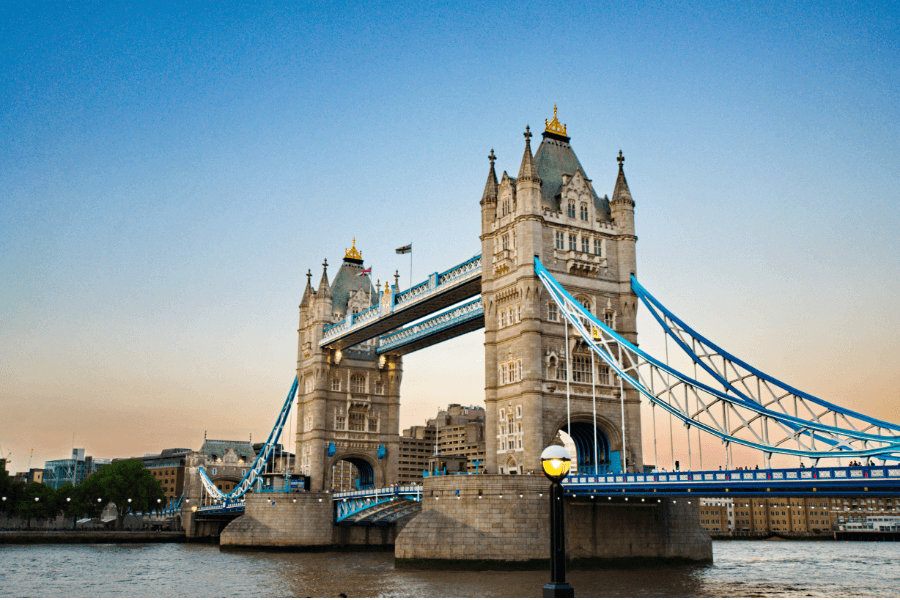

Top Attractions in London

Big Ben
- Iconic clock tower and a symbol of London.
- Located at the north end of the Palace of Westminster.
- Great photo opportunity near Westminster Bridge.
London Eye
- Giant observation wheel on the South Bank of the Thames.
- Offers stunning views of the city skyline.
- Best enjoyed during sunset or at night.
Buckingham Palace
- Official residence of the British monarch.
- Witness the Changing of the Guard ceremony.
- Explore nearby parks like Green Park and St. James's Park.
Tower Bridge
- Famous for its twin towers and suspension design.
- Glass walkway offers a thrilling experience.
- Visit the Tower Bridge Exhibition to learn about its history.
Back to Home